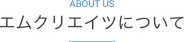

- HOME
- エム・クリエイツとは

「今いる人材を育て上げ組織のかけがえのない財産にしていく」
当社はそのためのサポートをしています。
少し長くなりますが当社の考えや事業に対する想いをご理解いただければ幸いです。
どうか、最後までお読みいただけますようお願いします。
エム・クリエイツ代表 李順葉の想い
私は20数年にわたり子育てや教育現場での仕事を通して、「人を育てる」ことをテーマに、どうすれば人は意欲を持って生き生きと生活し成果を上げることができるのだろうかを考えてきました。
そしてわかったことは、人は心で動くということです。
どんなに知識やスキル、また役割を与えても本人の心が動かなければ、本当の成果は上がりません。
人は変えられるのではなく、自らが変わりたいと思ったときに変わります。そして自分の人生の目的が明確になり、それと「今」が結びついたときに自らが変わりたいと心が決まります。 加えて周りから理解され、信頼され、必要とされていると感じたときに、さらに自己推進力が上がります。
本来、人は潜在的に「より良くなりたい」というニーズを持っています。
一人ひとりの持つ個性を見抜き適切なアプローチをすることで、誰でも心に火は灯り、行動が変わります。 心に注目し行動変化に結びつけることで人は必ず成長します。これからは人が育つ組織、互いのパフォーマンスを高め合える組織がますます存在価値を増していく時代です。
より多くの企業や組織の人材、その一人ひとりが持つ力を最大限に発揮させることができたら、社会はますます発展する――
その想いからエム・クリエイツを開業いたしました。
エム・クリエイツは理論と経験から培った深い洞察力とノウハウで、御社の今いる人材を育て上げ組織のかけがえのない財産にしていくことをサポートいたします。

大阪教育大学教育学研究科 健康科学専攻職業科学研究コース修了 学術修士
メンタリング学修士（I.O.U.）
≪保有資格≫
・キャリアコンサルタント(国家資格)
・NPO法人 国際メンターシップ協会認定チーフ・エグゼクティブメンター
・Persolog®行動モデル 認定トレーナー
・一般社団法人ドリームマップ普及協会認定講師
ホームページへお越しいただきまして、ありがとうございます。
エム・クリエイツの代表をしております
人が育つ組織創りのパートナー、李順葉です。
こちらでは少し私のことをご説明いたしますね。
李順葉（イ スニョップ）
「成長」と「自立」をテーマに、一貫して人の意欲を高めるためのプログラム開発と実施に取り組む。長く教育現場やＮＰＯ法人での活動が中心であったが、企業においても人材の育成に悩むことが多いと知り、徐々に企業での活動も始める。
さらに自立型人材の育成において教育の現場で蓄積した経験とスキルを広く世の中の組織で役立てたいと、2015年にエム・クリエイツを開業。研修サービスやコンサルティングを通して様々な企業や組織のニーズに応えている。
これまで幅広い層を対象としてキャリアとメンタリング、また人材育成に関する短期～長期のさまざまな研修・講座・講演を実施。理論的でありながら、人の心に深く伝わるメッセージを大切にしている。
また、ジョブカード面談をはじめ、のべ600名以上の様々な層のキャリア個人面談を経験。相手のニーズを相手以上に理解することで本人の心を動かし、一歩先への意欲と行動につながるとの評価を得ている。
人が育つ組織創りのために、“人を育てる人（メンター）”をサポートすることを使命としている。
専門分野はメンタリング（自立成長支援）、キャリア開発、コミュニケーション
公的機関における主なセミナー・講演実績
| 年度 | 実績 |
|---|---|
| 2009/08 | 大阪府教育センター 大学・専修学校等 オープンセミナー 「心に響くキャリア・カウンセリング入門」 |
| 2012/08 | 大阪府教育センター 大学・専修学校等 オープンセミナー 「教師のためのコーチング・メンタリング」 |
| 2013/06 | 堺看護専門学校 講演 「人としてのマナー ～よりよく生きる。 よりよく活かす。～ 」 |
| 2013/08 | 大阪府教育センター 大学・専修学校等 オープンセミナー 「教師のためのコーチング・メンタリング」 |
| 2014/05 | 大阪府立桜宮高校 講演 「生徒の能力を伸ばし、意欲を育むアプローチとは」 |
| 2014/05 | 大阪府教育センター 大学・専修学校等 オープンセミナー 「教師のためのコーチング・メンタリング」 「教師のための対人対応スキルアップ講座」 |
| 2015/02 | 大阪商工会議所 人材育成委員会 講演 「メンタリングで人を育てる ～メンター制度で図る組織の活性化について」 |
| 2014/05 | 大阪教育委員会 S-イノベーションプロジェクト 進路指導講演 「生徒が自ら『なりたい自分、つくす自分』を発見するために ～自立型思考を育むアプローチとは」 |
| 2015/11 | 大阪府委託事業大阪ウェルワーク共同企業体 管理職研修 「人がみるみる育つメンタリングの極意」 |
| 2016/07 | 大阪府教育センター 大学・専修学校等 オープンセミナー 「教師のためのコーチング・メンタリング」 |
講座・研修実績
| 年度 | 実績 |
|---|---|
| 2009～2012 | 基金訓練、求職者支援訓錬事業における就職支援講座、キャリア形成支援講座を担当 ジョブカード面談におけるキャリア・カウンセリング |
| 2013～ |
企業等における研修、コンサルティングを開始 ・Persolog®行動モデルを活用したコミュニケーションスキルアップのための各種研修 ・メンタリング理論に基づく育成者向け研修 など
|
| 2015～ | ドリームマップセミナーを開始 |
以下はエール学園講師としての実績
| 年度 | 実績 |
|---|---|
| 2004～2015 | 留学生対象のコースにて日本語科目担当講師 |
| 2012～ | 留学生対象のコースにて「メンタリング（キャリアデザイン）」科目担当講師、 科目コーディネーター、教材開発 |
| 2006～2008 2014～ |
国際メンターシップグラジュエートスクール 講座企画・運営、講座アシスタント、クラスメンター |


〒577-0808
大阪府東大阪市横沼町2-9-4
TEL 090-4765-9937
受付時間 9:00-18:00（土日祝休）